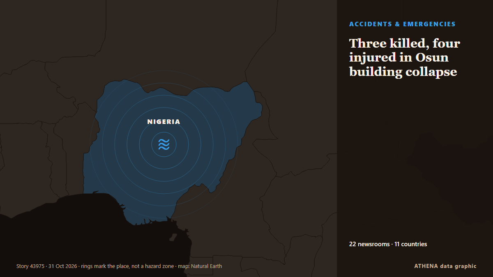

Three killed, four injured in Osun building collapse

The Lagos State Emergency Management Agency (LASEMA) has confirmed one death and the rescue of three adult males following the collapse of a two-storey building under construction in Fadeyi, Lagos. из Vanguard
Независимые источники: 22 издания в 11 странах, с 23 окт.; первым сообщил Vanguard; освещение идёт на спад. ATHENA оценивает риск как повышенный (4.7/10), прежде всего из-за тяжести описываемого ущерба и географического и отраслевого охвата. Уверенность — 86 % (высокая); подтверждают независимые источники: 22 издания, средняя надёжность источников — 70 %. Кто сообщал: 22 СМИ в стране Нигерия · Nigeria, 4 СМИ в стране Индия · India, 4 СМИ в стране Великобритания · United Kingdom. Освещение шло с 23 окт. по 29 окт., 147 ч.
Почему это важно: Правовые и политические изменения меняют права, обязанности и государственные услуги для затронутых людей.
Что изменилось: 2 новых сообщений от 1 редакций за 24 часа до 31 окт..
Первый заголовок: One dead, three rescued in Lagos building collapse
Заголовки приводятся на английском языке, как они были опубликованы.
Коротко в цифрах
Отобрано, оценено и написано по опубликованной методологии ATHENA. Ни один редактор не вмешивается в отдельные события. Как это создаётся ›
| 23 Oct 07:25 UTC | 5 |
|---|---|
| 23 Oct 19:25 UTC | 0 |
| 24 Oct 07:25 UTC | 0 |
| 24 Oct 19:25 UTC | 0 |
| 25 Oct 07:25 UTC | 0 |
| 25 Oct 19:25 UTC | 0 |
| 26 Oct 07:25 UTC | 1 |
| 26 Oct 19:25 UTC | 7 |
| 27 Oct 07:25 UTC | 2 |
| 27 Oct 19:25 UTC | 6 |
| 28 Oct 07:25 UTC | 8 |
| 28 Oct 19:25 UTC | 10 |
| 29 Oct 07:25 UTC | 8 |
| 29 Oct 19:25 UTC | 6 |
| 30 Oct 07:25 UTC | 0 |
| 30 Oct 19:25 UTC | 1 |
| 31 Oct 07:25 UTC | 1 |
| 28 Oct 16:42 UTC | 7.8 |
|---|---|
| 28 Oct 23:42 UTC | 6.7 |
| 29 Oct 23:55 UTC | 6.8 |
| 30 Oct 07:46 UTC | 4.5 |
| 31 Oct 11:02 UTC | 4.7 |
Откуда эти цифры
Значимость
Риск
Уверенность
Освещение — кто сообщил и когда
заголовок в оригинале · открывает источник- Vanguard · Нигерия · NigeriaOne dead, three rescued in Lagos building collapse
- Channels TV · Нигерия · NigeriaOne Dead, Three Rescued As Building Collapses In Lagos
- Daily Trust · Нигерия · NigeriaLagos: One dead, several feared trapped as building collapses
- Vanguard · Нигерия · NigeriaOne dead, three injured as two-storey building collapses in Lagos
- Punch · Нигерия · NigeriaOne dies, three injured in Lagos building collapse
- NDTV · Индия · IndiaSeveral Workers Trapped In Bengal Coal Mine After Pulley System Glitch
- Punch · Нигерия · NigeriaFire guts residential building in Anambra
- Punch · Нигерия · NigeriaTraders seek Lagos intervention to prevent market fires
- Punch · Нигерия · NigeriaMotorists groan as flood triggers gridlock in Lagos community
- Chronicle Live (Newcastle) · Великобритания · United KingdomBlyth Relief Road update with Government backing for £55m scheme 'off the table'
- Punch · Нигерия · NigeriaMedical outreach reaches over 4,000 Lagos residents
- Express Tribune · Пакистан · PakistanOne worker killed, six injured as under-construction plaza roof collapses in Multan
- The Hindu · Индия · IndiaAll 14 workers trapped at Bengal coal mine rescued
- Graphic Online · Гана · GhanaAuthority begins Okada operator registration in November
- Punch · Нигерия · NigeriaPolice confirm three killed, inspector injured in Kebbi violence
- MyJoyOnline · Гана · GhanaOne dead, 14 injured in Akuse–Akosombo highway crash
- Punch · Нигерия · NigeriaSAHCO, Air Algérie seal ground handling deal
- Punch · Нигерия · NigeriaLagos to host African Brands Congress on AI
- Punch · Нигерия · NigeriaKebbi violence leaves three dead, residents fleeing communities
- Stuff · Новая Зеландия · New ZealandPerson found dead in car crashed into water in Marlborough
- Punch · Нигерия · NigeriaLagos driver fleeing police arrest kills okada rider, injures two
- Birmingham Mail · Великобритания · United KingdomDeals struck at collapsed Midland flooring firm saving 147 jobs
- The Hindu · Индия · India26 dogs rescued from suspected meat trade in Assam
- The Herald (Scotland) · Великобритания · United KingdomFormer C&A building on Sauchiehall Street could be turned into 'boutique' hotel
- ANSA English · Италия · ItalyWorker dies in hospital after balcony collapses in Palermo area
- ANSA English · Италия · ItalyWorker dies in hospital after balcony collapses in Palermo area
- Trinidad Express · Тринидад и Тобаго · Trinidad and TobagoTwo women shot dead at spa in Couva
- Irish Examiner · Ирландия · IrelandHosanna in the highest bid: St Vincent's Church sale agreed at €400k
- The Hindu · Индия · IndiaChild rescued in Ranipet; four persons held
- Belfast Telegraph · Великобритания · United KingdomVincent Kompany released from hospital following collapse last week
- Punch · Нигерия · NigeriaLagos tackling 3.3m housing deficit, says Sanwo-Olu
- Punch · Нигерия · NigeriaLASG enlists fathers to prevent child abuse
- Punch · Нигерия · NigeriaLagos court denies wheelchair-bound suspect bail over murder
- Punch · Нигерия · NigeriaResidents groan as blackout hits Lagos communities
- Punch · Нигерия · NigeriaLagos man bags life jail for defiling 11-year-old girl
- Punch · Нигерия · NigeriaKeeping Oyo’s sugar dream alive
- Punch · Нигерия · NigeriaLagos warns motorists against ember months recklessness
- Punch · Нигерия · NigeriaHealth firm offers free screenings at Lagos fitness event
- Dawn · Пакистан · PakistanInquiry holds school owner responsible for roof collapse
- NEWS.am (English) · Армения · ArmeniaOne of persons trapped under soil due to Yerevan street collapse dies